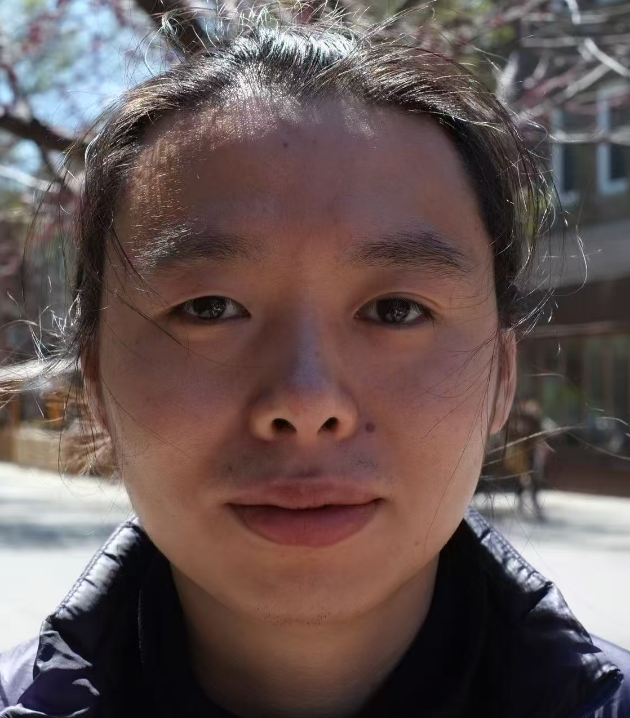

Birk Li
李尤嘉
PhD Candidate

| Affiliation | Macdonald Campus, McGill University (2016–) |
| Central Experiment Farm, Agricultural and Agri-Food Canada (2023–) |
Recent Works
Livestock GHG — From under-barn to outdoor swine manure storage: Modelling the effect of frequent under-barn pit emptying on methane emissions in a cold climate (2026) · Agri. Sys.
Process modelling — Improving CH₄ emission simulation for liquid manure storage tanks: Development of a manure temperature model in Manure-DNDC (2026) · Biosys. Eng.
For enquiries, contact:
liyoujia203@gmail.com
This is a tribute site inspired by the original at abehiroshi.la.coocan.jp — one of the internet's most beloved ultra-simple websites. All content belongs to their respective owners.